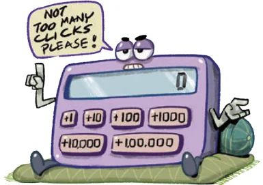
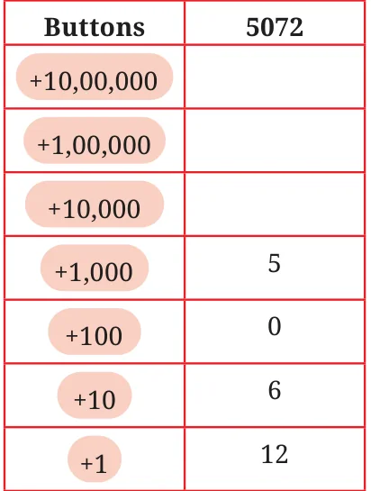

For each number given below, write expressions for at least two different ways to obtain the number through button clicks. Think like Chitti and be creative.
- 8300
- 40629
- 56354
- 66666
- 367813
Creative Chitti has some questions for you —
- You have to make exactly 30 button presses. What is the largest 3-digit number you can make? What is the smallest 3-digit number you can make?
- 997 can be made using 25 clicks. Can you make 997 with a different number of clicks?

Create questions like these and challenge your classmates.
Systematic Sippy is a different kind of calculator. It has the following buttons: +1, +10, +100, +1000, +10000, +100000. It wants to be used as minimally as possible.
How can we get the numbers (a) 5072, (b) 8300 using as few button clicks as possible?
Find out which buttons should be clicked and how many times to get the desired numbers given in the table. The aim is to click as few buttons as possible.
Here is one way to get the number 5072. This method uses 23 button clicks in total.
Is there another way to get 5072 using less than 23 button clicks? Write the expression for the same.
